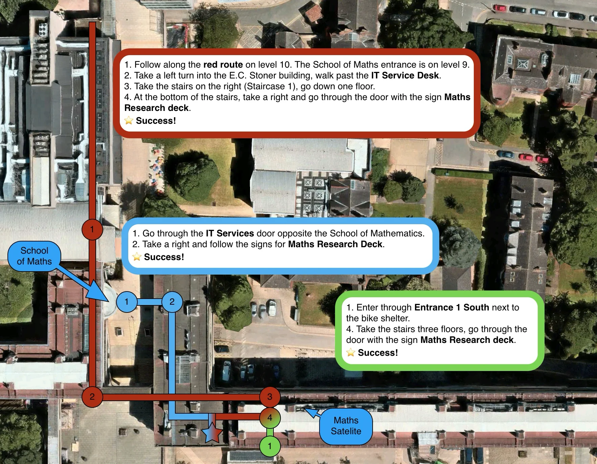

About
Hi, my name is Peter and I'm a Lecturer in Probability in the Statistics Department of the School of Mathematics at the University of Leeds.
My main focus of research lie in random (geometric) graphs, particle systems and more broadly percolation theory. More details, as well as my publication list can be found on the research page.
You might have found this page in error, in which case I wish you all the best on your future journey. If you are a student, you might be here to figure out how to find my office. If that's the case, I suggest you look at this map or head over to my contact page to find other ways to get in touch.
Short CV
- 2023-present: Lecturer in Probability, University of Leeds
- 2017-2023: PostDoc in the Research Group of Peter Mörters, University of Cologne
- 2014-2017: PhD in Probability (supervisor: Alexandre Stauffer), University of Bath
- 2013-2014: Forensic consultant, Deloitte AG, Zürich
- 2011-2013: MSc in Quantitative Finance, University of Zürich and ETH Zürich
- 2005-2011: University diploma in Applied Mathematics, University of Ljubljana